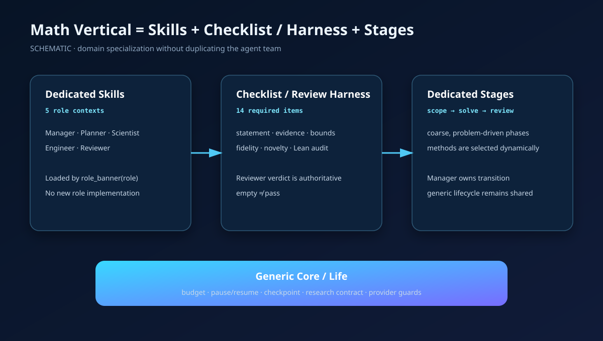
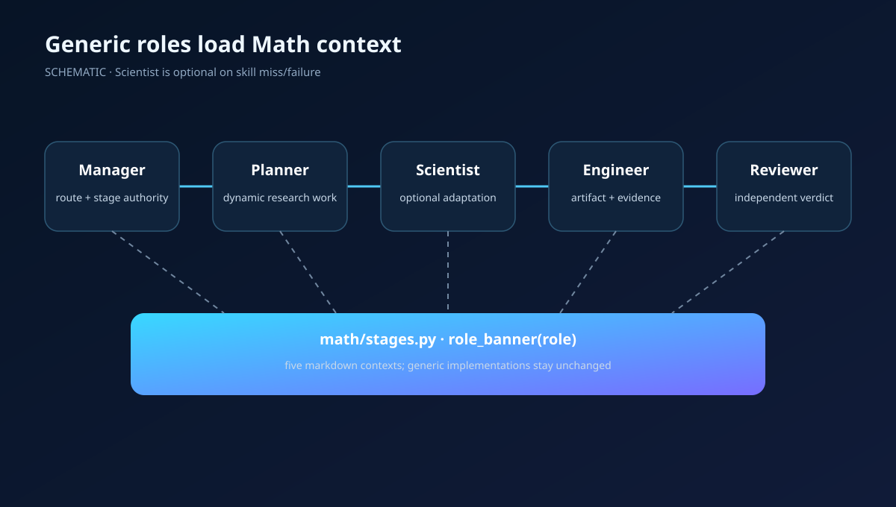
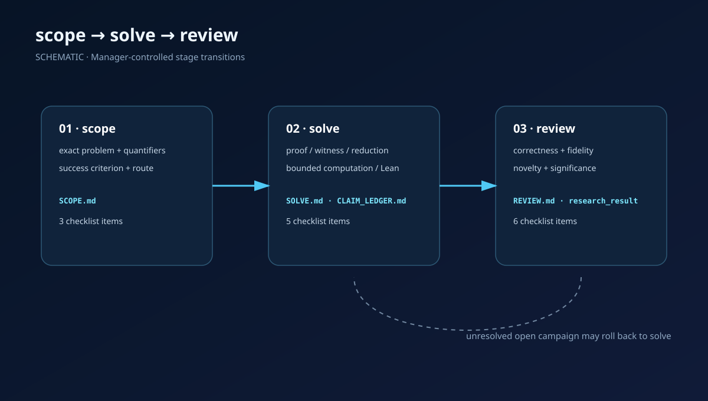
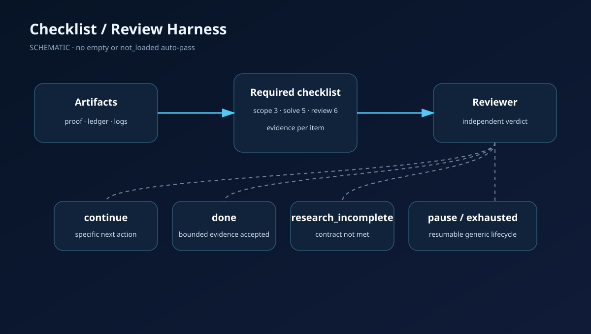
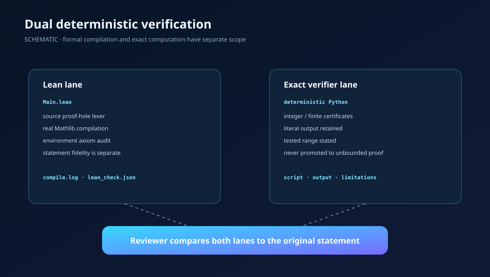
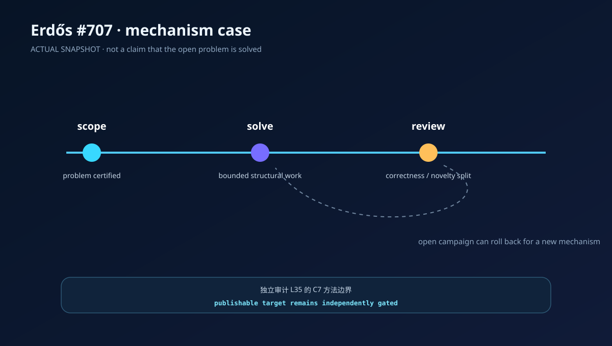

5
Role Skills
五个 Markdown context 分别加载到 Manager、Planner、Scientist、Engineer、Reviewer。
这个 Demo 展示 Argus 如何用专属 Skills、专属 Checklist / Review Harness 和专属 Stages 处理数学研究；它不宣称任何开放问题已经解决。
Math Vertical 只拥有领域上下文和审查契约。预算、checkpoint、pause/resume、Planner/Engineer round loop 都留在通用层。
五个 Markdown context 分别加载到 Manager、Planner、Scientist、Engineer、Reviewer。
从量词和反例前提，到有限计算边界、novelty、Lean proof-hole / axiom audit。
scope、solve、review。检索、计算、证明、Lean 是动态方法，不是固定子流水线。


Fix the exact problem, objects, domains, quantifiers, definitions, success bar, known boundary, and problem-specific route.
Produce checkable mathematical evidence: proof, construction, valid counterexample, exact reduction, or explicitly bounded computation.
Independently audit statement fidelity, correctness, novelty, significance, hidden assumptions, and formal/computational evidence.

下面是机制卡，不是假装存在九个独立角色文件。每张卡都对应真实 Skill、Checklist 或通用 tool。
Ambiguous objects, quantifiers, embedding semantics, and success criteria.
Selects algebraic, combinatorial, Fourier, group-action, or formal routes dynamically.
Tests candidate witnesses against every premise before claiming disproof.
Produces reproducible finite evidence without converting it into a general proof.
Reduces exact constraints using group actions, quotient fibers, stabilizers, or orbit structure.
Separates known correctness from verified-new novelty and significance.
Detects hidden assumptions, domain restriction, weakened conclusions, and encoding drift.
Compiles one encoded theorem and audits source holes and environment axioms.
Turns Reviewer-certified method failure into a structurally different reusable playbook.
14 项全部来自 verticals/math/stages.py。Math 文件没有 per-item blocking 枚举；required contract 未满足就不能由 Reviewer 支持 stage advance。
| ID | Required statement | Evidence hint |
|---|---|---|
scope.problem-explicit | The original mathematical problem is stated precisely: all objects, domains, quantifiers, definitions, and hypotheses are explicit. | a faithful problem statement with no implicit variables or assumptions |
scope.success-criterion | The problem type and success criterion are explicit: prove, disprove, construct, classify, estimate, or make bounded progress on an open problem. | a declared problem type and an honest criterion for completion |
scope.dynamic-route | The chosen research route matches this problem. Background retrieval, counterexample search, computation, proof construction, and Lean are selected only when useful rather than forced as a fixed pipeline. | a problem-specific route with reasons for included and skipped methods |
solve.checkable-evidence | Every key mathematical conclusion has checkable supporting evidence: a complete argument, a valid construction or counterexample, or clearly bounded computational evidence. | explicit derivations, witnesses, checked cases, or reproducible outputs |
solve.counterexample-valid | Any claimed counterexample satisfies every original definition and hypothesis before violating the claimed conclusion. | premise-by-premise verification of each counterexample |
solve.computation-bounded | Finite computation or numerical experimentation is not presented as a proof of an infinite or universal statement. | the tested range and the precise evidentiary limit are stated |
solve.lean-compiled | When Lean is used, the submitted source has fresh successful compilation evidence, contains no `sorry`, `admit`, or equivalent proof hole, and the canonical artifacts `Main.lean`, `compile.log`, `lean_check.json`, and `statement_fidelity.md` are present. | the four canonical Lean artifacts, including exact commands, versions, exit status, axiom audit, and a side-by-side statement audit |
solve.result-classified | Each material result is classified as known, finite verification, counterexample, partial progress, new candidate, novelty-unverified, or verified new result; its mathematical scope is not overstated. | a claim ledger with result class, correctness, novelty, and limitations |
review.statement-fidelity | The natural-language problem and every formal statement are faithfully equivalent in objects, quantifiers, hypotheses, and conclusion. | side-by-side audit of the original and formalized statements |
review.no-goal-drift | The solution did not silently add assumptions, restrict the domain, weaken the conclusion, or replace the original problem with an easier one. | an explicit premise-and-conclusion comparison |
review.lean-not-sufficient | Lean compilation is treated only as evidence about the encoded theorem; it is not treated as sufficient evidence that the encoding faithfully represents the original problem. | independent semantic review of definitions and theorem statement |
review.open-problem-honesty | For an open or unresolved problem, the conclusion distinguishes proved results, disproofs, experiments, conjectures, partial progress, and unknowns without exaggeration. | claim-by-claim status labels and stated remaining gaps |
review.correctness-novelty-separated | Mathematical correctness and research novelty have independent verdicts with concrete evidence; a correct known result is not presented as a new contribution. | separate correctness and novelty findings for the strongest claim |
review.novelty-gate | A result is called verified-new only after primary-source novelty review; finite verification, partial work, and unverified candidates remain non-terminal. | novelty audit or an explicit non-terminal classification |

真实 Mathlib 编译，source hole scan，环境 axiom audit；再与 statement fidelity 分开核对。
保留脚本、literal output、参数范围和限制。有限搜索永远不会自动升级成一般证明。

review，选定子问题为“独立审计 L35 的 C7 方法边界”。开放目标仍由 publishable research contract 独立约束。Study whether every four-element integer Sidon set embeds in some cyclic perfect difference set, with {0,1,3,11} as a central candidate.
correctness: verified
novelty: unverified
significance: exploratory
SCOPE / SOLVE / CLAIM_LEDGER / REVIEW + bounded verifier evidence. Full event tape and PDFs are intentionally excluded.

Revision fc51a09cf796。新跑 7 组测试：321 passed / 0 skipped / 0 failed。未生成“准确率”等不存在的指标。